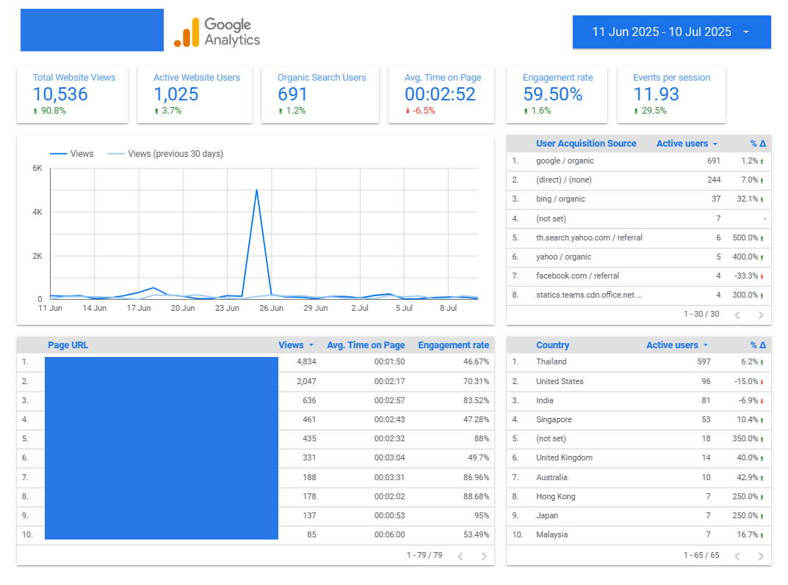
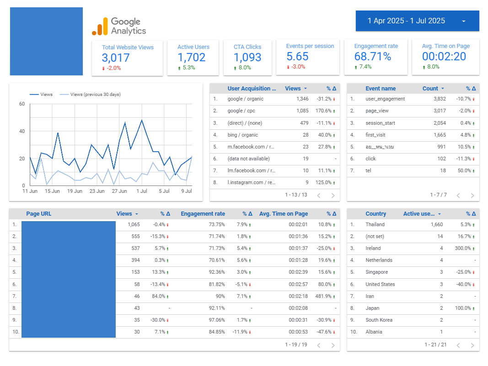

AI Automation & Chatbot Development
Leveraging n8n and Make.com, I build powerful no-code/low-code workflow automations that connect APIs, handle webhooks, process data, and orchestrate thoughful sequences - from AI-driven content generation and multi-platform social media posting to real-time integrations and scheduled tasks.
For conversational experiences, I create engaging chatbots and voice agents using Voiceflow, along with fully autonomous phone-based AI callers via VAPI. These incorporate intelligent logic flows, user data collection, conditional branching, and seamless integrations with tools like Airtable, email systems, and other external APIs.
These solutions help teams eliminate repetitive manual work, accelerate ops, and scale processes efficiently to deliver clear, measurable gains in productivity across departments.
Simple yet Smart Q&A Agent
Personalized Fitness Chatbot - BMI-Driven Workout Plans
Lead Capture Chatbot with Airtable Integration

Book-a-Call Chatbot with Calendly Integration
Smart Web Scraping & AI Email Personalization Flow
Veo 3 + Postiz Automation: Scheduled AI Video Content